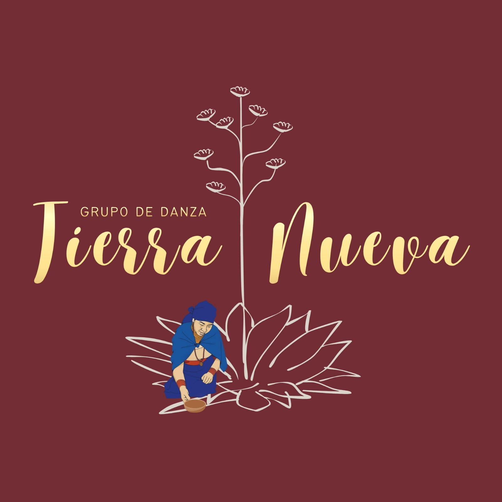
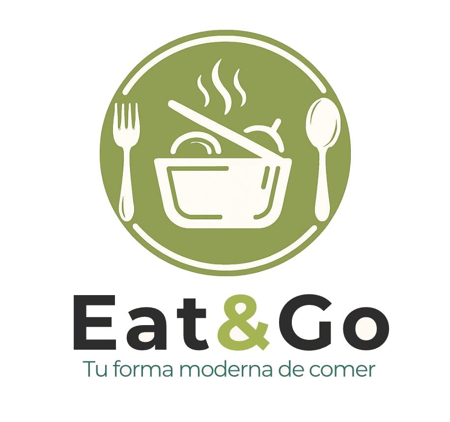

Proyecto artístico centrado en la danza folklórica ecuatoriana, donde actúo como director y responsable de la coordinación, coreografía y ensayos. Este proyceto busca preservar la cultura y adaptarla a una puesta en escena actual. Gracias a ello he fortalecido mis habilidades de liderazgo, creatividad, organización y trabajo en equipo, transformando la danza en una experiencia cultural y expresiva.
Ver proyecto
Idea de negocio basada en la preparación y distribución de comida casera en tuppers, enfocada en ofrecer una alternativa saludable, práctica y accesible para el día a día. El proyecto abarca desde el desarrollo de la propuesta gastronómica hasta la planificación del modelo de negocio, la organización operativa y la estrategia de mercado. Me ha permitido desarrollar habilidades en emprendimiento, planificación empresarial, gestión de recursos, creatividad y análisis de mercado.
Ver proyecto